Every Space
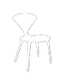
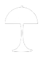
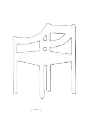
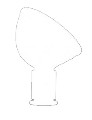
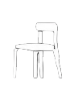
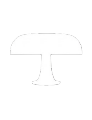
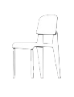
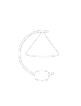
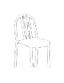
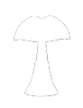
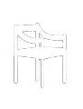
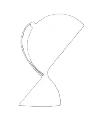
Is A.Matter
Welcome to my Magazine. Expect unsolicited opinions on spatial sociology, deep dives into architectural curation, and a lot of Probably unnecessary analysis on why everyday spaces matter.
Architectural Matter Not a moodboard
This is not another interior design blog. A.MATTER is an independent magazine that treats architecture as a critical object, rather than just a background.
Sponsored by my lack of free time and powered by endless Notion databasesAll of this is driven by three investigative tools // dialectical, archival, and analytical // which make up the magazine's main formats. The ultimate goal is to build a community of design, fashion, and architecture enthusiasts, which is a fancy way of saying I just want to find other people who overanalyze spaces as much as I do.
Main Format
// A.Question //
The Start of a Discussion Hopefully civil
The flagship format. Everything starts with // a.question // but honestly, the goal isn't to give you a definitive answer. It's just an excuse to start a debate. Consider it a prompt to overthink the most random topics across architecture, design, and art.
// A.Casestudy //
Didactic by Choice Not out of boredom
An analytical format digging into architectural typologies, creative fields, and pure architectural marketing. I // overanalyze // everything from entire buildings down to a single piece of furniture, just to uncover its underlying concepts.
// A.Story //
The Historical & Archival Matrix Or how we nerd out
A complete picture of architecture and design. Don't panic, this isn't your sleep-inducing architectural history lecture. It's more of a // column // dedicated to discovering and meticulously analyzing the events that shaped the world we are so deeply obsessed with.